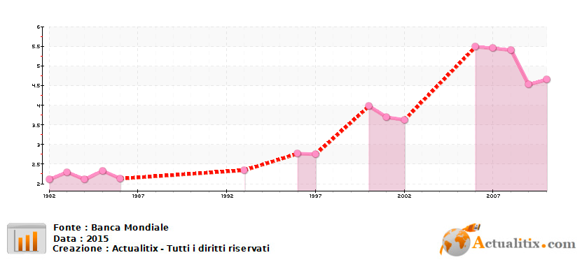
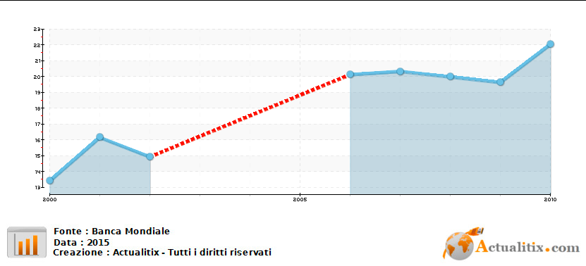

L'educazione moderna dell'occidente è arrivata in Etiopia nel XX secolo e ha avuto una lenta diffusione: Solo il 3,3% di persone in età scolastica ha frequentato la scuola nel 1961. Diversamente da altri paesi Africani, in cui il dominio coloniale dei paesi Europei era più radicato, l'etiopia fu uno degli ultimi paesi ad essere colonizzato, precisamente dall'Italia, e per questo il suo sistema educativo si sviluppò in modo "indigeno" rispetto al resto dei paesi colonizzati. Dopo la costruzione dell'università di Addis Abeba, primo istituto superiore in Etiopia nel 1950, nei decenni successivi sono stati costituiti nuovi college perlopiù amministrati da occidentali.
Durante il periodo marxista del Derg (Governo Militare Provvisorio dell'Etiopia Socialista) dal '77 al '91, le politiche educative vennero influenzate dai paesi di stampo comunista. Anche se il governo del Derg sfruttò l'educazione politicizzandola per utilizzarla alll'indottrinamento ideologico, vennero fatti progressi nell'incremento dei tassi di iscrizione alle scuole elementari. Il dittatore Menghistu lanciò un programma su larga scala per l'aumento dell'alfabetizzazione: nonostante la guerra civile quest'ultimo riscontrò un grande successo riducendo il tasso di analfabetizzazione nazionale. Nell'istruzione superiore però i tassi di ingresso diminuirono nonostante l'apertura di più istituti. La spesa destinata alle università venne ridotta per favorire le spese militari. Questo fece in modo di far fuggire molti accademici dal paese.
Per la scuola primaria sono stati fatti progressi considerevoli, tramite la riduzione della distanza tra le scuole e le case degli alunni, La strategia nazionale chiamata alternative Basic education che dal 2006 guida la trasformazione di edifici in stato di degrado in scuole regolari. Nella scuola secondaria invece, negli ultimi vent'anni il tasso di iscrizione è all'incirca quintuplicato i arrivando a toccare 2 milioni di iscritti nel 2013. Permane però un grande limite: la difficoltà di accesso a questa scuola, specialmente nelle periferie poiché per ogni istituto di scuola primaria ce n'è solo uno di scuola secondaria Visto il poco numero di istituti la domanda è molto inferiore, a causa anche dei problemi di povertà e alla mancanza di un sistema di trasporti efficienti. L'istruzione secondaria è divisa in due cicli: il primo dura due anni e ha la funzione di ponte tra la primary e la secondary school e termina con l'Ethiopian General Secondary Education Certificate, il quale garantisce l'accesso al secondo livello.
Nel 1986 c'erano solamente tre università e 16 college che contavano meno di 18.000 studenti. Oggi è ci sono 30 università pubbliche e il settore privato è in crescita. Il numero di studenti universitari è esploso e passando da poco più di 30.000 nel 91 a quasi 800.000 nel 2014. Questa esponenziale crescita ha sovraccaricato il sistema e creato nuove problematiche, come la carenza di finanziamenti e il peggioramento della qualità d'istruzione: Solo il 15% degli insegnanti ha conseguito un dottorato e i finanziamenti sono quindi molto bassi e facendo sì che l'Etiopia si collochi al di sotto di altri paesi africani come il Ruanda e la Tanzania. La disoccupazione tra i laureati ha un tasso elevato e questo solleva interrogativi sulla qualità dell'istruzione accademica rendendola poco adatta alle richieste del mercato del lavoro. Ancora oggi l'accesso all'istruzione universitaria in Etiopia rimane gravemente limitato.
